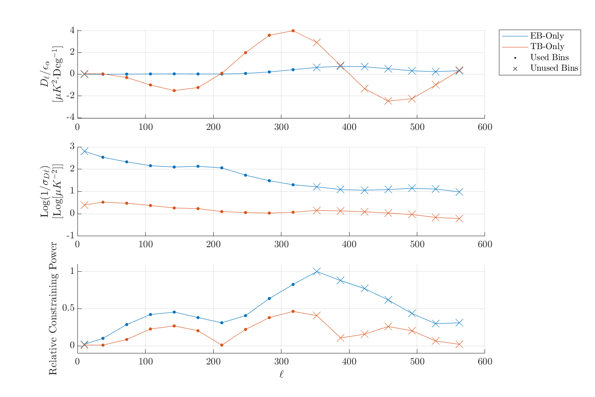

Isotropic Polarization Rotation Analysis 4: Angle estimates including higher ell-bins
—
J. Cornelison
\(
\newcommand{\Cl}{\mathcal{C}_\ell}
\newcommand{\Cb}{\mathcal{C}_b}
\newcommand{\oCb}{\mathcal{\hat C}_b}
\newcommand{\rCb}{\mathcal{C'}_b}
\newcommand{\Ccov}{\mathrm{\mathbf{C}}}
\newcommand{\siga}{\sigma_\alpha}
\newcommand{\sigasq}{\sigma_\alpha^2}
\newcommand{\choll}{\mathbf{L}}
\newcommand{\BX}{\textbf{X}}
\newcommand{\BY}{\textbf{Y}}
\newcommand{\BI}{\textbf{I}}
\newcommand{\BBE}{\mathbb{E}}
\newcommand{\cov}{\text{Cov}}
\require{cancel}
\require{color}
\newcommand{\tozero}[1]{\color{red}{\bcancel{\color{black}{#1}}}\color{black}}
\)
In our mainline CMB analysis, we have 17 total bandpowers but only use 9 of them (bins 2 through 10). In this posting, I examine how our uncertainty on angle estimates could be improved when including higher bandpowers. I find that we could potentially reduce our uncertainty by ~30% which is pretty enticing. Before we can move forward with this though, we'll have to prove to ourselves that systematics have been sufficiently understood at these higher ells, perhaps by looking at beam sims.
Constraining power vs. ℓ
We want to look at the constraining power per-ℓ between the EB and TB spectra (i.e. determine which bandpowers contribute most to α considering both the model and our bandpower uncertainties).
We currently only use our canonical science bins (bins 2 through 10) and this exercise will be useful in determining if we might want to include higher bins in the analysis as well.
For some arbitrarily small input angle εα, we get some spectra out of our model, Cb. Because εα is small and the small angle approximation applies, the shape of Cb should be constant and only linearly scale by α. Thus we normalize the shape of the model spectra by dividing Cb by εalpha -- in the case of uniform weighting, this alone would tell us which bandpowers contribute most to the contraints on α with the higher values of Cb/εalpha possessing higher constraining power. However, this doesn't consider the uncertainties on the bandpowers themselves, so we weight the Cb/εalpha by the inverse of the bandpower sample variance which we get from sims.
In application, I calculate the EB and TB expectation values using reduc_global_rotation's subfunction pol_rot_theory_model using our fiducial input model from B18's final file with an input angle of 0.001° -- this angle is arbitrary as it could be any value as long as it satisfies the small-angle approximation. I divide the expectation values by the input angle and then divide the model spectra by the per-bandpower standard deviation of B18's 499 Lensed-LCDM+Noise+Dust EB and TB sims . In the plot below, take the absolute value since TB can be negative and I peak normalize to show the relative constraining power in EB and TB.

Top Model EB and TB bandpowers for some arbitrary input angle, normalized by the input angle. Middle Log-Y plot of the inverse variance of the spectra per-bandpower. Bottom Relative constraining power of EB and TB spectra (multiplying the top plot by the middle plot and peak normalizing). Higher values indicate higher constraining power. The dots are bins that are normally used during our global rotation analysis of real CMB data and X's are bins that are not normally used.
There are a couple of points to note from the plot above:
We can see that in the top plot that TB would have more constraining power in EB, but this is countered by the fact that TB has much higher sample variance compared to EB.
Most of our constraining power for EB is in the ℓ-range of ~270 to 450, only two bins of which we are actually using.
For TB, most constraining power comes from the ℓ-range of ~250 to 350, bracketed by the ℓ values where the TB signal pivots around zero, but it still less than half as good as EB.
What do the sims say?
In the pager below, I show angle estimates for 499 matrix-purified B18 sims (sernum 6614)[1] for fits across three bin-ranges: 2-10 (our default), 11-15, and 2-15.
We see a confirmation of the previous section:
For EB, most of the constraining power is in the higher ells, so the bins of 11-15 has a $\siga$ that's 18% lower
than our default 2-10. Combining bins 2-15 results in a $\siga$ that's 33% lower thanjust using 2-10.
For TB, we've already captured most of our constrianing power in bins 8-10 so the bins 11-15 has a $\siga$ 50% higher than our default bins. Since not much more information is in those higher bins, we only see an improvement to $\siga$ of 12% when using bins 2-15.
In his posting , Justin explored the benefits of including higher ℓ-ranges and this posting provides a good argument for looking into doing that again for this analysis. The primary issue is that we'll need to convince ourselves that systematics are sufficiently low at those higher ells before we choose to use them. The way we're thinking of convincing ourselves of whether or not we can use these high ells is by looking at beams sims -- perhaps by fitting angles to them to identify any increased $\siga$ or biases in α.
Appendix
Footnotes
Click on the number to return to the main text.
[1]
Our fiducial B18 maps sims, sernum 3553, are not matrix-purified -- this happens in a different sernum when crossing B18 with K18 and Planck. I wanted the B18 maps by themselves, so in sernum 6614 I create matrix-purified APS using the maps from 3553.